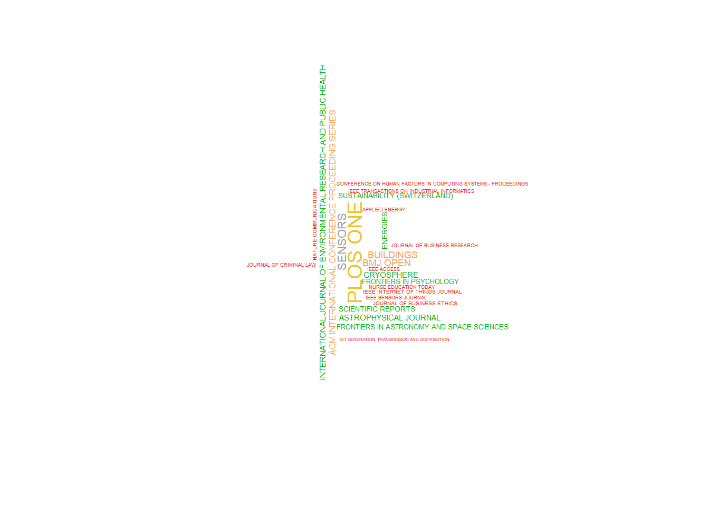
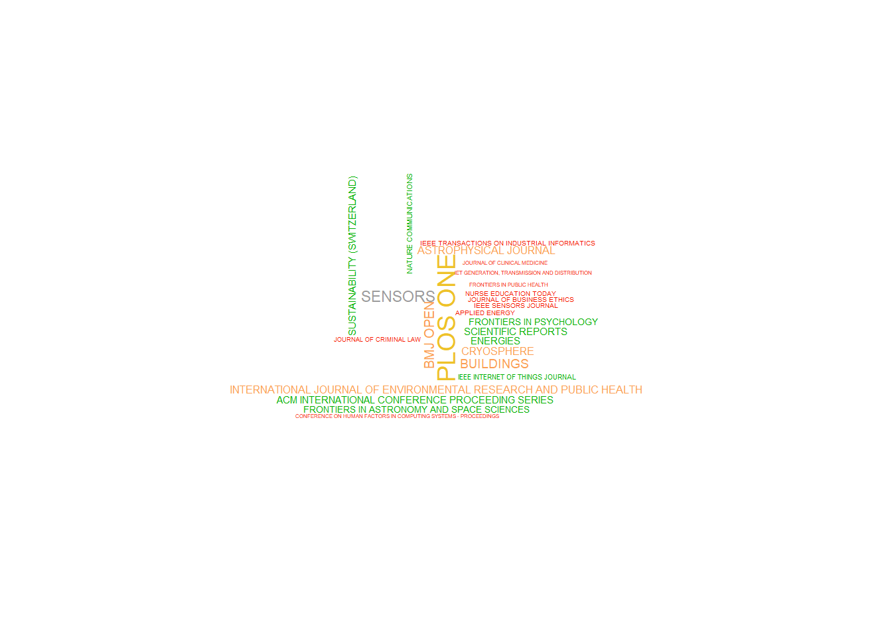
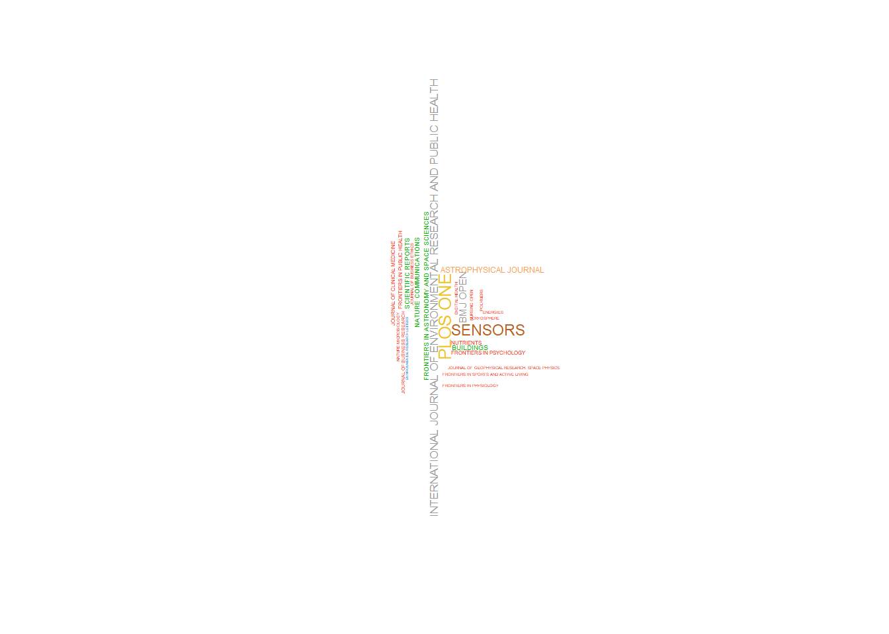
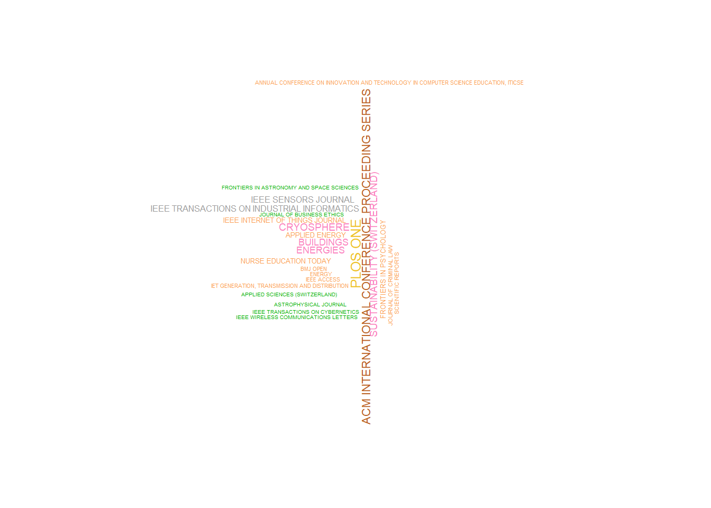
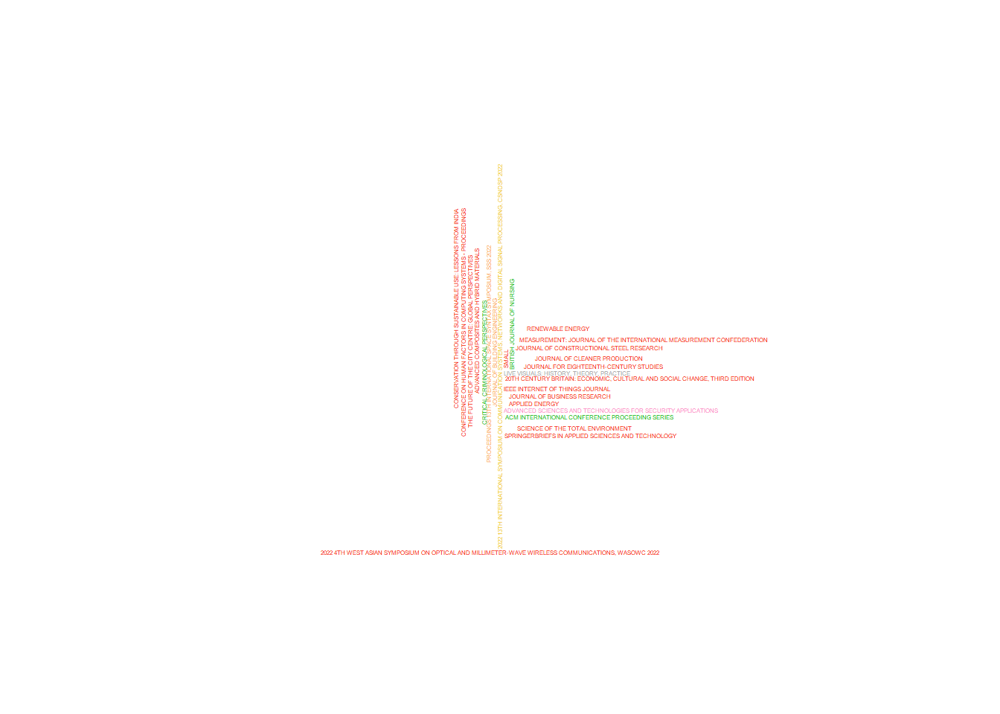
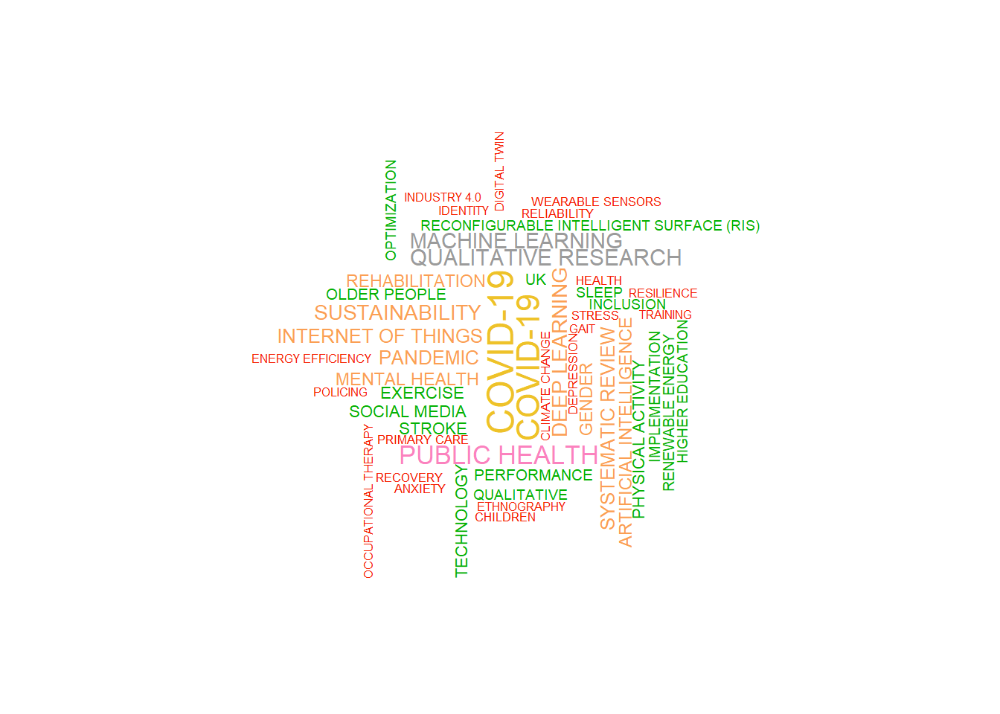
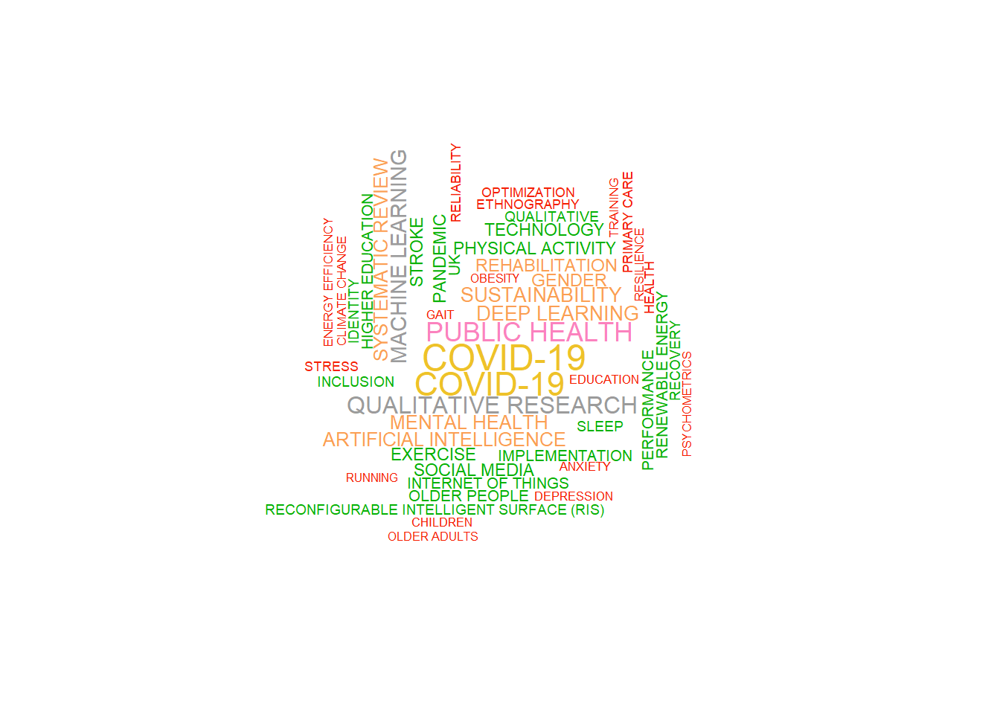
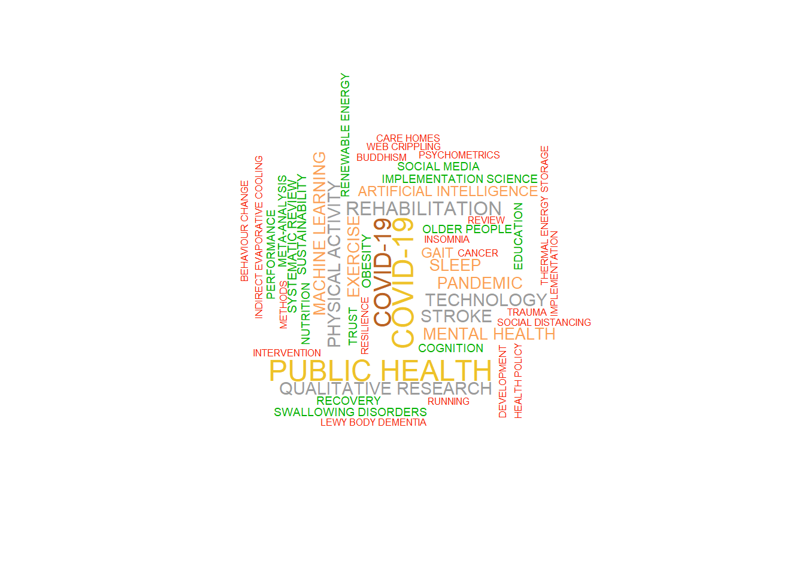
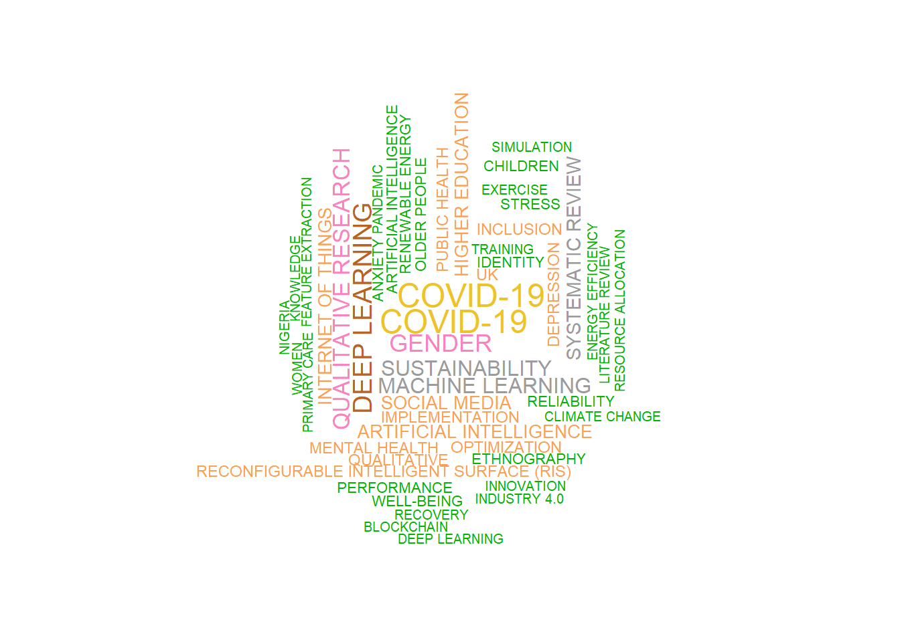
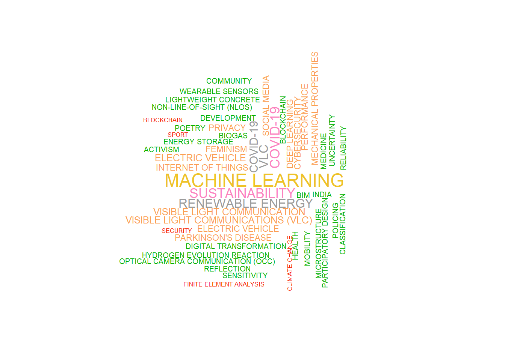

Word Clouds
Preparation for Word Clouds
corr_table_all_oa<-table(rp_single_author_all_oa$AU)
corr_table_all_oa_sorted <- corr_table_all_oa%>%
as.data.frame() %>%
arrange(desc(Freq))
corr_table_green<-table(rp_single_author_green$AU)
corr_table_green_sorted <- corr_table_green%>%
as.data.frame() %>%
arrange(desc(Freq))
corr_table_green_final<-table(rp_single_author_green_final$AU)
corr_table_green_final_sorted <- corr_table_green_final%>%
as.data.frame() %>%
arrange(desc(Freq))
corr_table_green_accepted<-table(rp_single_author_green_accepted$AU)
corr_table_green_accepted_sorted <- corr_table_green_accepted%>%
as.data.frame() %>%
arrange(desc(Freq))
corr_table_not_green<-table(rp_single_author_not_green$AU)
corr_table_not_green_sorted <- corr_table_not_green%>%
as.data.frame() %>%
arrange(desc(Freq))Separate tables for Open Access publications
SO_table_all_oa<-table(scopus_wos_all_oa$SO)
SO_table_all_oa_sorted <- SO_table_all_oa%>%
as.data.frame() %>%
arrange(desc(Freq))
SO_table_green<-table(scopus_wos_green$SO)
SO_table_green_sorted <- SO_table_green%>%
as.data.frame() %>%
arrange(desc(Freq))
SO_table_green_final<-table(scopus_wos_green_final$SO)
SO_table_green_final_sorted <- SO_table_green_final%>%
as.data.frame() %>%
arrange(desc(Freq))
SO_table_green_accepted<-table(scopus_wos_green_accepted$SO)
SO_table_green_accepted_sorted <- SO_table_green_accepted%>%
as.data.frame() %>%
arrange(desc(Freq))
SO_table_not_green<-table(scopus_wos_not_green$SO)
SO_table_not_green_sorted <- SO_table_not_green%>%
as.data.frame() %>%
arrange(desc(Freq))Publications
Yarrr package seems to be best for vibrant and differing colours!
All Open Access
set.seed(1404)
DF_SO_table_all_oa_sorted <- as.data.frame(SO_table_all_oa_sorted)
wourdcloud_green_publications<- wordcloud(words = DF_SO_table_all_oa_sorted$Var1, freq = DF_SO_table_all_oa_sorted$Freq, min.freq = 1, max.words=25, random.order=FALSE, scale=c(1.2,0.05), rot.per=0.35, colors = piratepal("xmen")) ##Just the TOP 25
##To fit long publication names had to make the words pretty smallGreen
DF_SO_table_green_sorted <- as.data.frame(SO_table_green_sorted)
wourdcloud_green_publications<- wordcloud(words = DF_SO_table_green_sorted$Var1, freq = DF_SO_table_green_sorted$Freq, min.freq = 1, max.words=25, random.order=FALSE, scale=c(1.2,0.05), rot.per=0.35, colors = piratepal("xmen")) ##Just the TOP 25
##To fit long publication names had to make the words pretty smallGreen Final
DF_SO_table_green_final_sorted <- as.data.frame(SO_table_green_final_sorted)
wourdcloud_green_final_publications<- wordcloud(words = DF_SO_table_green_final_sorted$Var1, freq = DF_SO_table_green_final_sorted$Freq, min.freq = 1, max.words=25, random.order=FALSE, scale=c(0.8,0.05), rot.per=0.35, colors = piratepal("xmen")) ##Just the TOP 25
##To fit long publication names had to make the words pretty smallGreen Accepted
DF_SO_table_green_accepted_sorted <- as.data.frame(SO_table_green_accepted_sorted)
wourdcloud_green_accepted_publications<- wordcloud(words = DF_SO_table_green_accepted_sorted$Var1, freq = DF_SO_table_green_accepted_sorted$Freq, min.freq = 1, max.words=25, random.order=FALSE, scale=c(0.8,0.05), rot.per=0.35, colors = piratepal("xmen")) ##Just the TOP 25
##To fit long publication names had to make the words pretty smallNot Green
DF_SO_table_not_green_sorted <- as.data.frame(SO_table_not_green_sorted)
wourdcloud_not_green_publications<- wordcloud(words = DF_SO_table_not_green_sorted$Var1, freq = DF_SO_table_not_green_sorted$Freq, min.freq = 1, max.words=25, random.order=FALSE, scale=c(.25,0.25), rot.per=0.35, colors = piratepal("xmen")) ##Just the TOP 25
##To fit long publication names had to make the words pretty smallKeywords
All Open Access
all_oa_keywords<- scopus_wos_all_oa %>% separate_rows(DE, sep = "; ") %>% select(DE)
all_oa_keywords<- all_oa_keywords %>%
count(DE)
all_oa_keywords<- na.omit(all_oa_keywords)
colnames(all_oa_keywords)[2]<- "Freq"
wourdcloud_just_all_oa_keywords<- wordcloud(words = all_oa_keywords$DE, freq = all_oa_keywords$Freq, min.freq = 1, max.words=50, random.order=FALSE, scale=c(1.5,0.25), rot.per=0.35, colors = piratepal("xmen")) ##Just the TOP 50
Green
green_keywords<- scopus_wos_green %>% separate_rows(DE, sep = "; ") %>% select(DE)
green_keywords<- green_keywords %>%
count(DE)
green_keywords<- na.omit(green_keywords)
colnames(green_keywords)[2]<- "Freq"
wourdcloud_just_green_keywords<- wordcloud(words = green_keywords$DE, freq = green_keywords$Freq, min.freq = 1, max.words=50, random.order=FALSE, scale=c(1.5,0.25), rot.per=0.35, colors = piratepal("xmen")) ##Just the TOP 50
Green Final
green_final_keywords<- scopus_wos_green_final %>% separate_rows(DE, sep = "; ") %>% select(DE)
green_final_keywords<- green_final_keywords %>%
count(DE)
green_final_keywords<- na.omit(green_final_keywords)
colnames(green_final_keywords)[2]<- "Freq"
wourdcloud_just_green_final_keywords<- wordcloud(words = green_final_keywords$DE, freq = green_final_keywords$Freq, min.freq = 1, max.words=50, random.order=FALSE, scale=c(1.5,0.25), rot.per=0.35, colors = piratepal("xmen")) ##Just the TOP 50
Green Accepted
green_accepted_keywords<- scopus_wos_green_accepted %>% separate_rows(DE, sep = "; ") %>% select(DE)
green_accepted_keywords<- green_accepted_keywords %>%
count(DE)
green_accepted_keywords<- na.omit(green_accepted_keywords)
colnames(green_accepted_keywords)[2]<- "Freq"
wourdcloud_just_green_accepted_keywords<- wordcloud(words = green_accepted_keywords$DE, freq = green_accepted_keywords$Freq, min.freq = 1, max.words=50, random.order=FALSE, scale=c(1.5,0.25), rot.per=0.35, colors = piratepal("xmen")) ##Just the TOP 50
Not Green
not_green_keywords<- scopus_wos_not_green %>% separate_rows(DE, sep = "; ") %>% select(DE)
not_green_keywords<- not_green_keywords %>%
count(DE)
not_green_keywords<- na.omit(not_green_keywords)
colnames(not_green_keywords)[2]<- "Freq"
wourdcloud_just_not_green_keywords<- wordcloud(words = not_green_keywords$DE, freq = not_green_keywords$Freq, min.freq = 1, max.words=50, random.order=FALSE, scale=c(1.5,0.25), rot.per=0.35, colors = piratepal("xmen")) ##Just the TOP 50